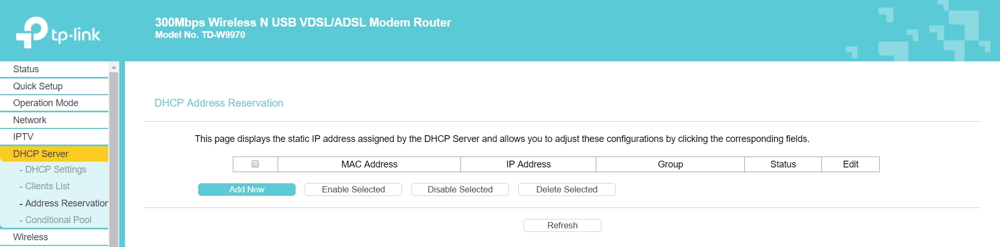
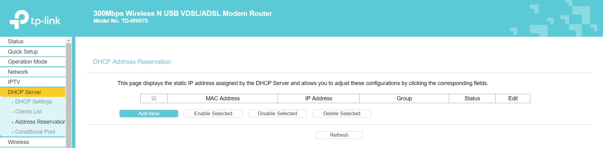
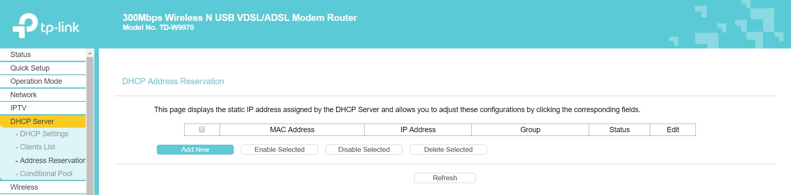
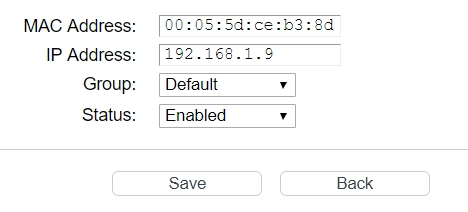
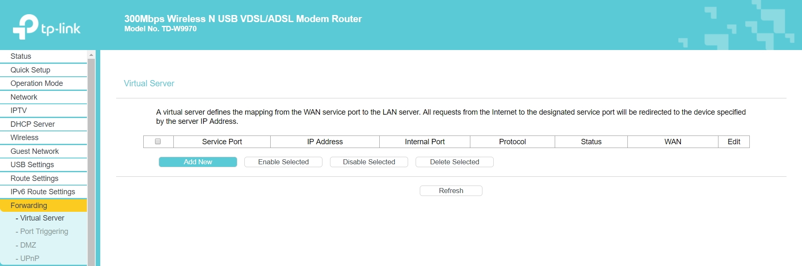
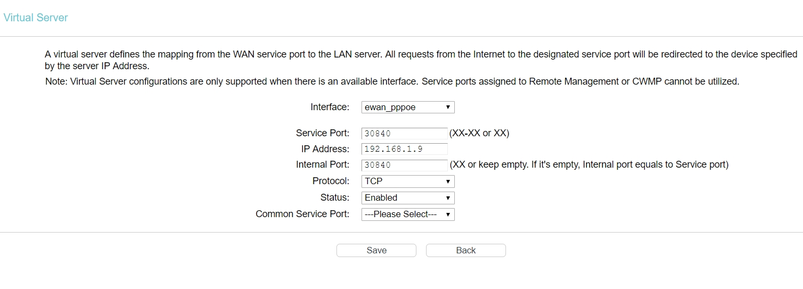
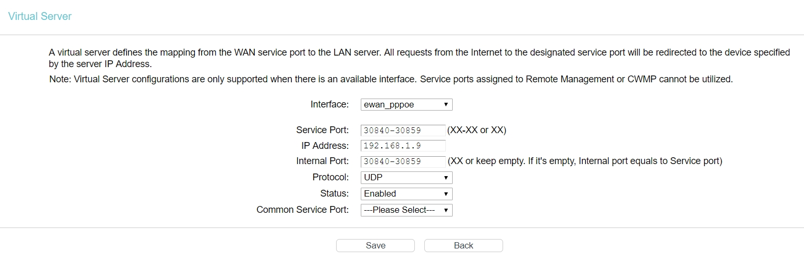
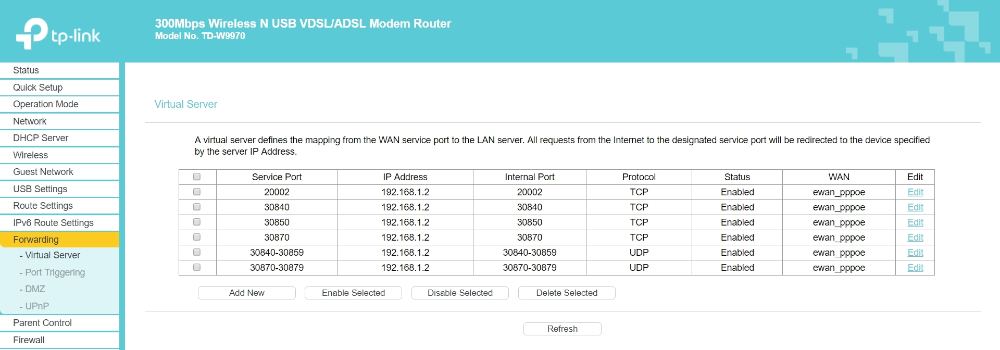
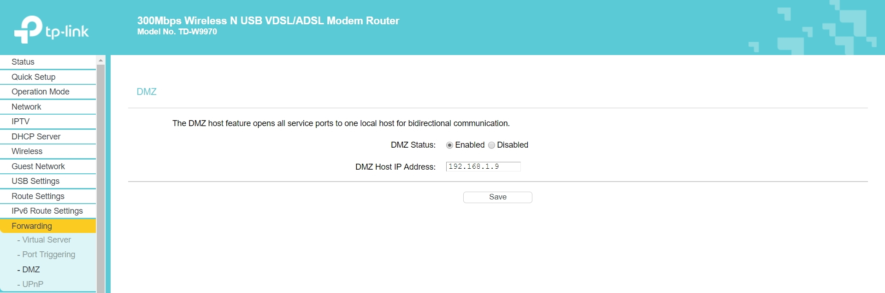
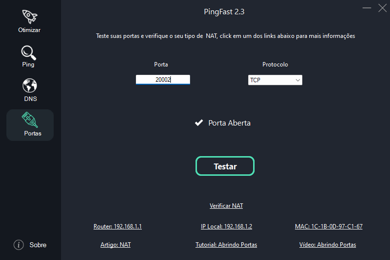

Abertura de Portas
Há muitas razões pelas quais você pode querer encaminhar(abrir) portas. Além da obrigatoriedade para bom uso de certas aplicações alguns jogos multiplayer exigem um encaminhamento de porta para permitir que os jogadores se conectem uns aos outros. Outros jogos tentam fazer a conexão automaticamente, mas falham com frequência se pelo menos um dos jogadores não tiver um encaminhamento de porta.
Outra razão para redirecionar a porta durante o jogo é que, muitas vezes, em um lobby multijogador, o jogador com a porta redirecionada se torna o host do lobby. Como resultado os jogadores obtêm tempos de ping significativamente melhorados, menos atraso, menos falhas e o potencial para uma experiência de jogo muito melhor. Inicialmente pode parecer um processo chato mas leva menos de 3 minutos e trás benefícios permanentes pra jogos que talvez você jogue todos os dias.
Antes de iniciar este tutorial você precisa saber que se você estiver em CGNAT ou utilizar algum firewall
altamente intrusivo (raro) as portas podem continuar constando como fechadas. Para ler mais sobre o assunto consulte o artigo de NAT
Temos um artigo com as portas usadas por diversos jogos, click para visualizar
O Texto abaixo é um tutorial alternativo ao vídeo, não é necessário realizar o processo duas vezes
Vídeo Tutorial
Fixando seu IP na rede interna
As portas são abertas para um IP especifico, antes de fazer a abertura você precisa fixar um em sua rede.
Para ter acesso ao router abra o PingFast e dentro do menu de Portas click no Gateway do seu Router.
 Realize o login, se você não sabe o seu login e senha o site RouterPasswords pode te ajudar.
A página do router não usa HTTPS, isso pode gerar um aviso no seu navegador, é normal, apenas ignore e prossiga, caso você não consiga chegar a tela de login do seu router consulte o seu provedor.
No menu de opções procure por "Address Reservation" esta opção geralmente esta em DHCP (tplink) ou Setup>network settings (dlink). O tutorial vai seguir usando ilustrações de um router TPLINK mas não é difícil seguir usando routers de outras marcas. Se atente sempre de substituir o IP e o MAC mostrados no tutorial pelos seus.

Realize o login, se você não sabe o seu login e senha o site RouterPasswords pode te ajudar.
A página do router não usa HTTPS, isso pode gerar um aviso no seu navegador, é normal, apenas ignore e prossiga, caso você não consiga chegar a tela de login do seu router consulte o seu provedor.
No menu de opções procure por "Address Reservation" esta opção geralmente esta em DHCP (tplink) ou Setup>network settings (dlink). O tutorial vai seguir usando ilustrações de um router TPLINK mas não é difícil seguir usando routers de outras marcas. Se atente sempre de substituir o IP e o MAC mostrados no tutorial pelos seus.

Realize o login, se você não sabe o seu login e senha o site RouterPasswords pode te ajudar.
A página do router não usa HTTPS, isso pode gerar um aviso no seu navegador, é normal, apenas ignore e prossiga, caso você não consiga chegar a tela de login do seu router consulte o seu provedor.
No menu de opções procure por "Address Reservation" esta opção geralmente esta em DHCP (tplink) ou Setup>network settings (dlink). O tutorial vai seguir usando ilustrações de um router TPLINK mas não é difícil seguir usando routers de outras marcas. Se atente sempre de substituir o IP e o MAC mostrados no tutorial pelos seus.

Clique em "add new"

Ao Clicar no seu MAC e IP Local no PingFast eles serão copiados para você colar aqui, marque status como "enabled" e clique em "save"
A forma como os roteadores aceitam o MAC pode variar, caso você receba uma mensagem de erro tente substituir o formato, por exemplo:
00-05-5d-ce-b3-8d
00:05:5d:ce:b3:8d
00055dceb38d
Abrindo Portas
O tutorial vai ensinar duas formas de abrir: Virtual Server e DMZ.
No Virtual server você abre portas especificas, é uma opção mais segura e recomendada apesar de um pouco mais trabalhosa.
No DMZ você irá abrir todas as portas, o que não é recomendado em um PC.
Escolha somente um método
Virtual Server
No menu do seu router procure por "fowarding" ou "advanced > fowarding", vá na opção "Virtual Server" e clique em "add new"

Em Service e Internal Port você vai colocar os mesmos números das respectivas portas do jogo, o mesmo para protocol (vide abaixo), em IP você preenche com o seu (basta clicar nele dentro do menu de portas do PingFast para copiar) e marca o status como "enabled", não é necessário preencher "common service port" ou "application name", clique em salvar e repita o processo para cada porta necessária

Neste Exemplo vamos usar as portas do Street Fighter V que são:
TCP: 20002, 30840, 30850, 30870
UDP: 30840-30859, 30870-30879
Você deve repetir o processo para cada porta TCP e UDP, se atente ao fato de que onde aparece "-" significa que todas as portas dentro daquela faixa devem ser abertas, insira desta forma no seu router usando "-" ou ":" dependendo do modelo, como no exemplo abaixo:

Após salvar todas as configurações a página do virtual server deve ficar semelhante a esta:

DMZ
No menu do seu router procure por "fowarding" ou "advanced > fowarding" e vá na opção DMZ, tudo que você precisa fazer é digitar o IP Local do PC(basta clicar nele dentro do menu de portas do PingFast para copiar), marcar ativado e salvar.

Testando Portas com o PingFast
Testar as portas é muito simples, basta digitar o número, selecionar o protocolo e clicar para testar, os testadores online podem não ser confiáveis porque eles não
conseguem abrir a conexão corretamente, o PingFast testa a conexão entre a sua internet e a sua rede local então se a porta constar como aberta você pode confiar!
